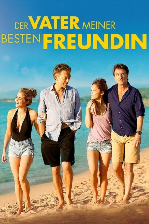

#3238 Der Vater meiner besten Freundin
 gesehen am 09.04.2016
gesehen am 09.04.2016
 
 IMDB-Wertung: 6.3 / 10
IMDB-Wertung: 6.3 / 10  Metascore: 0
Metascore: 0 
Die beiden jungen Freundinnen Louna (Lola Le Lann) und Marie (Alice Isaaz) haben sich schon länger auf den gemeinsamen Sommerurlaub an der sonnigen Küste Korsikas gefreut, sich bereits endlose Partynächte ausgemalt und davon geträumt, süße Jungs aufzureißen. Als der Trip dann tatsächlich ansteht, wird das Vergnügen jedoch erheblich dadurch getrübt, dass die Väter der beiden Mädchen ihre Töchter begleiten. Vor allem Lounas Papa Antoine (François Cluzet) zieht mit seinen strengen Regeln regelmäßig den Zorn der Freundinnen auf sich. Maries Vater Laurent (Vincent Cassel) hingegen sieht alles viel entspannter, wovon Louna zunehmend angetan ist. Eines Nachts am Strand ergreift sie schließlich die Gelegenheit, Laurent zu verführen. Der lässt sich darauf ein, bereut den Ausrutscher am nächsten Morgen aber direkt. Louna allerdings hat sich Hals über Kopf in Maries Vater verknallt. Doch wie reagieren Marie und Antoine, wenn sie Wind von der ganzen Sache bekommen?
Jahr: 2015
Dauer: 105 Minuten
FSK:
Land: Frankreich Studio: Weltkino FilmverleihTonspuren:
Untertitel:
Auflösung: 1080p (1920x1036) Größe: 10014 MB
Genre: Drama, Komödie, Liebe
Regisseur: Jean-François Richet
Drehbuch: Claude Berri, Lisa Azuelos, Lisa Azuelos, Lisa Azuelos, Jean-François Richet
Soundtrack: Philippe Rombi
Darsteller:
 Vincent Cassel als Laurent
Vincent Cassel als Laurent François Cluzet als Antoine
François Cluzet als Antoine- Lola Le Lann als Louna
- Alice Isaaz als Marie
- Noémie Merlant als Linda
 Philippe Nahon als Le voisin d'Antoine / Antoine's neighbor
Philippe Nahon als Le voisin d'Antoine / Antoine's neighbor Annelise Hesme als Sylvie
Annelise Hesme als Sylvie- Jules Pélissier als Le copain de Romain
- Louka Meliava als Romain
- Romain Apelbaum als Le DJ Via Notte
- François Bergoin als Le chauffeur de taxi
- Samuel Torres Bianconi als Le loueur de jet-ski
- Pierre-Marie Mosconi als Le copain corse 1
- Thomas Bronzini de Caraffa als Le copain corse 2
- Jacques Andreani als Le moniteur canyoning
- Daniel Delorme als Le vendeur Gamm Vert
- Patrick Sébastien als Himself / En personne à la télévision , archive footage, uncredited
Datei: X:\2015(N-Z)\Vater meiner besten Freundin, Der (2015, FSK, 1920x1036).mkv seit 20.02.2016
Festplatte: HD 2015(A-Z)
 Es gibt insgesamt 161 Filme in der Gruppe '2015(N-Z)'
Es gibt insgesamt 161 Filme in der Gruppe '2015(N-Z)'